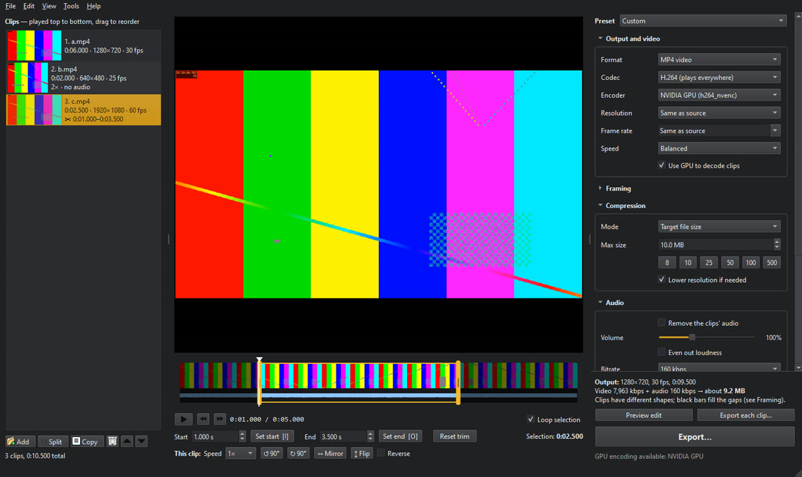
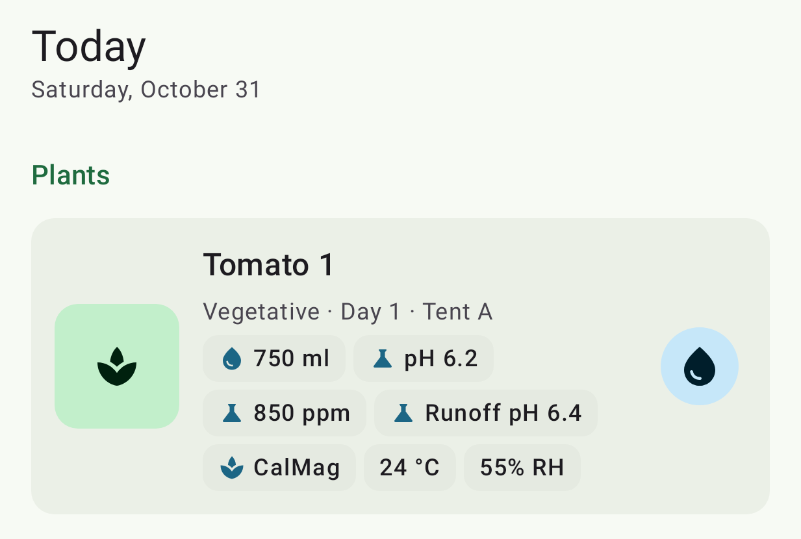

Scrap Riot
Work in progress
A 3D robot duelling game you play in the browser.
A fan-made homage to Robot Rage, not affiliated with or endorsed by Miniclip.
Games, apps and audio tools, with the source on GitHub.
Work in progress
A 3D robot duelling game you play in the browser.
A fan-made homage to Robot Rage, not affiliated with or endorsed by Miniclip.
A Guitar Pro style tab viewer and player. Paste a Songsterr link for a full score with playback, in sync with the original recording from YouTube. Opens Guitar Pro and MusicXML files too.

A desktop app for everyday video jobs: trim and join clips, add music and transitions, and compress to a size limit like 10 MB for Discord. Encodes on your GPU.
A high-gain guitar amp sim with four amp channels, Neural Amp Modeler captures, cab IRs and a pedalboard you can reorder.

An Android app for tracking indoor plant grows: watering, fertilizer, pH and PPM per plant, with photos and reminders. Your data stays on your device.
A Bloomberg-style terminal that runs on your own machine. It watches market-moving posts and shows how prices moved after each one.
Older experiments and everything else that's public: bots, microcontrollers and small scripts.